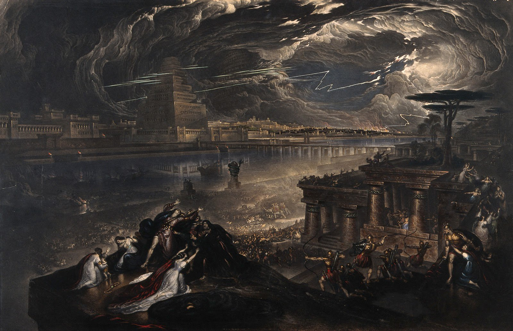

El Futuro no Es Verde. Es Complejo. Y lo estamos construyendo.
Una visión audaz donde la naturaleza prospera y la mente humana evoluciona por el bien común.
Nuestra Postura
En SolarpunkFTZY, no buscamos la utopía fácil, sino la realidad posible. Abrazamos la sostenibilidad con un análisis crítico de sus matices, promoviendo el respeto y la apreciación genuina por la naturaleza, impulsados por una profunda filosofía de coexistencia.
Objetos para la Resistencia (y el Estilo)
Porque vestirse también es una declaración. Descubre nuestra colección de merchandising con un toque de ironía y conciencia.
Camiseta "Orgánicamente Cínico"
Una prenda que provoca más que solo miradas.
Gorro "Consumo Consciente... ¿o no?"
Cubre tu cabeza, pero no tu mente crítica.
Últimas Reflexiones
Análisis profundos y noticias sobre sostenibilidad real, sin filtros ni *greenwashing*.